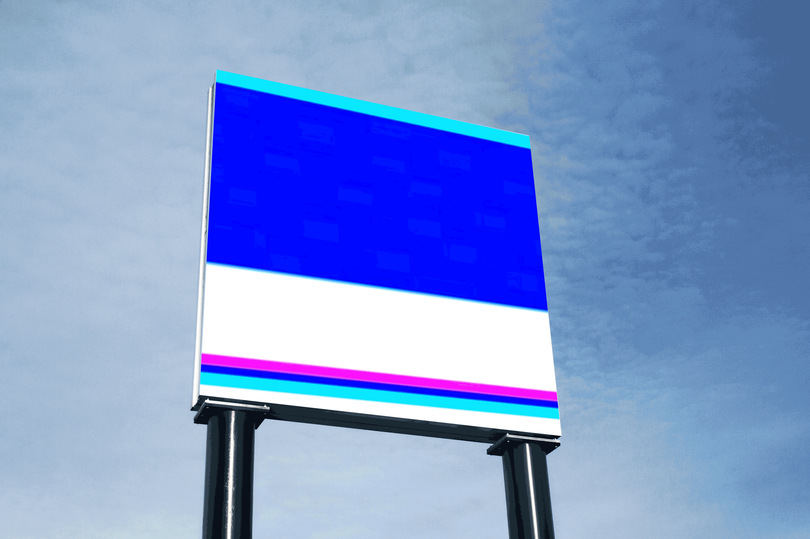

Why do humans/computers crash (die)?
‘Virus Infection’ is a piece that depicts how human body and digital system of computer react to certain type of errors when in contact with virus. The whole process of contact involves multiplication of virus and transformation of a current status of a system. A sudden failure which puts a system out of action triggers both organizations into obsolete state.

The entire progress of the virus infection is portrayed through coding two different crash of humans and computers. During the whole process of how the computer malfunction is represented through the motion of bacteria and virus being infected to human body cell. This transitions of two different subjects are shown through the random changes of the scenes. The universal audio of Google translate saying “virus” in different language is also embedded to signify that the virus is prevalent anywhere in the world.
Process video of how Virus Infection (2019) is coded with Max/ Msp